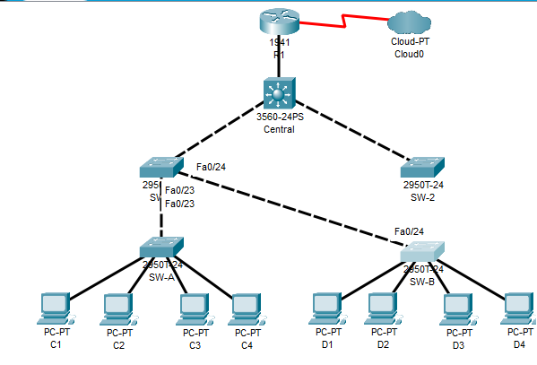

2020/07/15 - 第6回
課題1
コマンド
Central
spanning-tree vlan 1 root primary
interface range f0/23 - 24
spanning-tree guard root
SW-1
spanning-tree vlan 1 root secondary
interface range f0/23 - 24
spanning-tree guard root
SW-2
SW-A
interface range f0/1 - 4
spanning-tree portfast
spanning-tree bpduguard enable
int range f0/1 - 22
switchport mode access
switchport port-security
switchport port-security
switchport port-security maximum 2
switchport port-security violation shutdown
switchport port-security mac-address sticky
int range f0/5 - 22
shutdown
SW-B
interface range f0/1 - 4
spanning-tree portfast
spanning-tree bpduguard enable
int range f0/1 - 22
switchport mode access
switchport port-security
switchport port-security
switchport port-security maximum 2
switchport port-security violation shutdown
switchport port-security mac-address sticky
int range f0/5 - 22
shutdown
設問パート1
ステップ1
- どのスイッチがルートブリッジか
SW-1 - トポロジ
ステップ4
- 現在のルートブリッジ
Central - ツールがないのでトポロジに書き込めないので説明
- SW-2, SW-1間のポートは切断されている(SW-2側)
- SW-A, SW-2間のポートが切断されている(SW-A側)
- SW-2, SW-B間のポートは切断されている(SW-B側)
設問パート3
ステップ1
- 他のスイッチデバイスに接続されているポートでポートセキュリティが有効にならないのはなぜ
学習するMacアドレスの最大数が2のため
設問パート4
- 設問の回答(上記)
- コマンド(上記)
- パート3, ステップ2で学習したMACアドレスの明記とC1と一致するかどうか
0060.3E81.4647:1、一致する
課題2
コマンド
スイッチ全部共通の
(config)# vlan 20
(config)# interface vlan 20
(config-if)# ip address 192.168.20.? 255.255.255.0
<100~104, 管理用PCに105を振る。R1だけごっちゃにならないように254>
SW-1, SW-2
(config)# interface f0/23
(config-if)# switch mode trunk
(config-if)# switch tru native vlan 15
(config-if)# switch none
SW-A
(config)# interface f0/1
(config-if)# swi mode ac
(config-if)# swi ac vlan 20
R1
(config)# interface g0/0.3
(config-if)# enc d 20
(config-if)# ip address 192.168.20.254 255.255.255.0
ここまでで90%くらい。ちゃんとPCとか配線してれば100%
R1(ACLの設定)
(config)# ip access-list ex 100
(config-router)# permit ip host 192.168.20.105 any
<自分の環境次第で105は変える>
(config-router)# deny ip any any
(config-router)# exit
(config)# int g0/0.3
(config-if)# ip access-group 100 in
設問
- 管理PCから、SW-A, SW-B, R1へのPingは通るか
接続できる
- D1から管理PCにPingできるか
失敗する